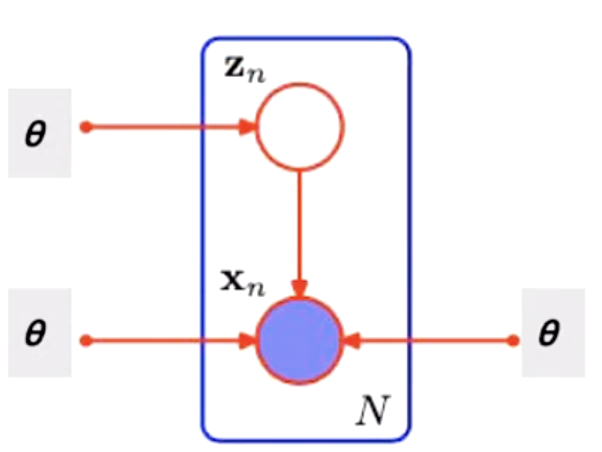

$X$ observed, $Z$ latent variable; $P(X,Z\mid \theta)$ the joint distribution is given, governed by parameter $\theta$. We want to maximize the data likelihodd $P(X\mid \theta)$ w.r.t. $\theta$;
The E step, take expectation of the complete data likelihood $P(X, Z\mid \theta)$ w.r.t. $Z$:
The above term can be explained as:
where $f(X,Z\mid \theta) = \ln P(X,Z\mid\theta)$ which is the $\ln$ of complete data likelihood (taking $\ln$ is for computation convenience).
We want to maximize the expectation of data likelihood by adjusting the parameter $\theta$, hence the M step:
Under construction...